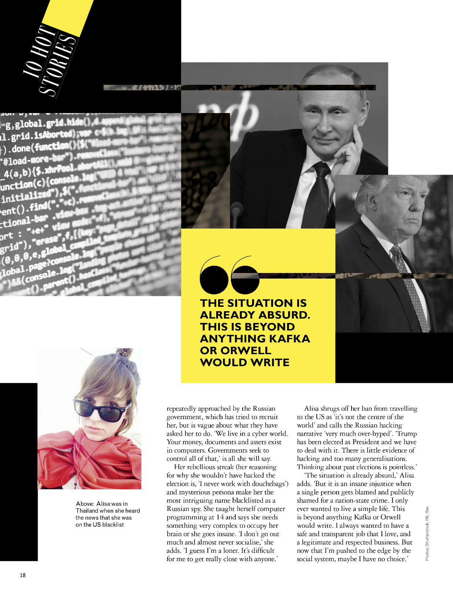

About
Alisa Esage (Russian: Алиса Шевченко, Alisa Shevchenko) is a computer security researcher, ethical hacker, and an entrepreneur.
Wikipedia page
Alisa is the first female hacker to win the world's most iconic professional hacking competition
Pwn2Own, that has been
exclusively male-dominated since its establishment in 2007, and the only woman in the world to enter such competitions as a solo participant.
Hacker News article
Heise.de
Slides:
Advanced Exploitation of Simple Bugs: a Parallels Desktop Case Study (Pwn2Own 2021)
Alisa taught herself assembly programming language and reverse engineering at age 15, worked professionally as a malware analyst at age 19, and owned a boutique infosec services company at age 25, before starting a solo career in advanced vulnerability research, participating in top-tier security bounty programs and competitions, and presenting at renowned security conferences.
Chaos Communications Congress
Phrack magazine
Alisa's vulnerability research work was recognized by Microsoft, Google, Firefox, Oracle, Schneider Electric, and other software giants.
Slides:
Hypervisor Vulnerability Research 2020 (pdf)
Training:
Hypervisor Vulnerability Research
Alisa was featured in Forbes Russia magazine as a young self-made entrepreneur, as well as in Forbes Global, The Guardian, New York Times, Grazia Magazine, and other international media outlets.
Feature in Forbes Russia 2014 (note: automated translation is incorrect)
Interview for The Record (2021)
Русские хакерши: разговор с Алисой Esage Шевченко (примечание: оригинал интервью на английском языке по ссылке выше, перевод волонтёрский с искажениями,
этот комментарий правильный)
Alisa's research interests are focused on advanced offensive security challenges at the intersection of hardware, firmware and software. Specific targets include hypervisors (
1,
2,
3), basebands (
1,
2), bootloaders (
1,
2). She is available for consulting engagements as well as contractual R&D projects.
Projects
Zero Day Engineering: training & intelligence
Research Notes
Contacts
Mail list •
Email •
Twitter
{kind=link}